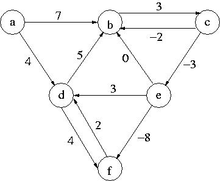

Algorithms and Data Structures (INF1, Autumn'04)
Exercise Set 14
Exercise 1:
Take a look at the following digraph.

- Construct the resulting table for Bellman-Moore algorithm.
Fill in also the column where k=n (see page 289 of the book).
- Does this digraph contain a negative cycle? Why yes/no?
Exercise 2 (possible exam question from category 2!):
Solve Exercise 12.2 from the book (page 340). Assume that the input road map
is represented as a digraph (which is a result of replacing every edge
in a given graph by two edges of the same cost but in the oposite
direction) and use exclusively the operations
from DIGRAPH ADT to design a polynomial time algorithm.
Provide a detailed analysis of its worst-case time complexity.
Be specific about what data structures you used.
Exercise 3:
Professor Konfus once claimed:
"Dijkstra's algorithm works correctly even if the weight of the edges can
be negative."
Was he right? If yes, prove his claim. If not, give a counter example
and clear explanation why it is not the case.